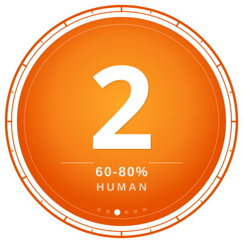

All Welcome

C-AITS: 2 (Hybrid)The bellows filled first. A long, mechanical inhale drawn through leather lungs older than anyone still alive in the parish. The electric blower had replaced the pumping boy sometime in the seventies. Air had to be gathered, compressed, held in a reservoir like breath before speech. The organ did not make sound. The organ controlled wind.
Thomas Calder set his feet on the pedalboard and rested his hands at his side. He fanned his fingers back and forth as much as the arthritis would allow. The wood had gone dark where ten thousand fingers had worn the varnish away. His own fingers had contributed to maybe a third of that damage. The small strip of paper that fluttered when the wind was unsteady and went still when the reservoir reached its working pressure settled flat. He played the first chord.
Air passed through the valves and split against the lips of the flue pipes. Each pipe spoke at the frequency its length demanded, but the fundamental tone was only part of what was heard. Every pipe produced a note shaped by its material, its diameter, its dings and patina; something specific to this instrument and no other. An imperfection in the tin alloy. A happy flaw the congregation had been hearing for a hundred and forty years without ever knowing they were hearing it.
The sound hit the stone. Limestone walls, slate floor, a vaulted ceiling the Victorians had left exposed because they liked the appearance. The room caught the frequencies, it held them and added its own. The lowest notes dropped into a range where the wavelengths were longer than the pipes themselves. The building completed what the organ could not. Cracked alloy, settled stone and arthritic hands, none of it designed to work together yet it all sang as if the will of every person who had ever been in the building had intended it.
Calder played through the Buxtehude G minor with the same fingering he'd practiced last Tuesday and the Tuesday before that when he dusted off the music folder. BuxWV 148. Three and a half centuries old. Bach himself had walked two hundred and fifty miles to Lübeck to hear the man who wrote it, had sat hidden in the Marienkirche while the old master practiced alone in a building not so different from this one. Calder had always liked that story. The young genius, humbled, listening in secret. He wondered if Buxtehude had known someone was there, the way you sometimes feel the weight of attention even in an empty room. His back was to the nave, same as it always was, same as it had been when this building held three hundred people at Easter, same as it was now. The mirror above the console, angled so the organist could see the altar and the congregation and the clergy's signals, showed nothing new. He did not adjust his playing.
The G minor had a chaconne near the end where the left hand carried a walking bass. Calder had always loved that passage because it sat in the part of the keyboard where the organ's voicing was richest. The room filled with overlapping sound, each chord bleeding into the next, the stone walls returning the previous bar a half-second late so that the music existed in two temporal states at once: the present and the immediate past. The ear integrated them into one experience. The echo came back full and rich. The room gave him everything it had.
He played the full programme. Forty minutes. The heaters had come on at half past six, and the building had reached twelve degrees. His breath became visible when he reached difficult pedal passages. His feet in their organ shoes, leather-soled for feel on the pedals, were numb. He did not stop to warm them. He played through the cold the same way he played through everything.
The postlude ended on a sustained major chord. He held it for four bars as written, then lifted his fingers. The pipes stopped speaking. The sound in the room did not stop. It decayed through the stone and cardboard-patched stained glass windows for another three seconds. The building seemed reluctant to let the sound go. Some of it stayed in the walls. Some residual vibration persisting in the limestone. The room remembered the music longer than any human ear could follow it.
Calder switched off the blower. The motor wound down with a descending hum. The wind reservoir deflated, the leather bellows settling flat, and the silence that replaced the music was broken by the applause of the now ancient heaters creaking and cracking as they cooled.
He closed the fallboard over the keys. Gathered his music from the stand, though he'd played all of it from memory. He folded the sheets into the leather satchel his daughter had given him when he retired from the grammar school, and he stood, and his knees reminded him of his age in their specific, grinding dialect. He turned off the console lamp. He switched off the heaters. He walked down the nave, his organ shoes quiet on the stone, and turned off the lights row by row. As he passed the third pew on the left his hand trailed across its back, briefly, the way it had every Tuesday since the seat stopped being occupied. He checked the vestry door. He closed the main doors behind him and locked the front. The building settled into the dark.
The churchyard path was gravel, loud under his shoes after the silence of the stone floor. The air was fresh. He remembered how her hand felt in his as they walked home. As he passed the community noticeboard at the end of the path he didn't look at the poster. He knew what it said. Almost a month ago he'd taken the time to climb the hill and put it up himself.
ST PETER'S CHURCH ORGAN RECITAL
Tuesday 4th March, 7:00 pm
Thomas Calder, FRCO
Music by Buxtehude, Bach, and Howells
All Welcome. Free Admission. Refreshments afterwards.